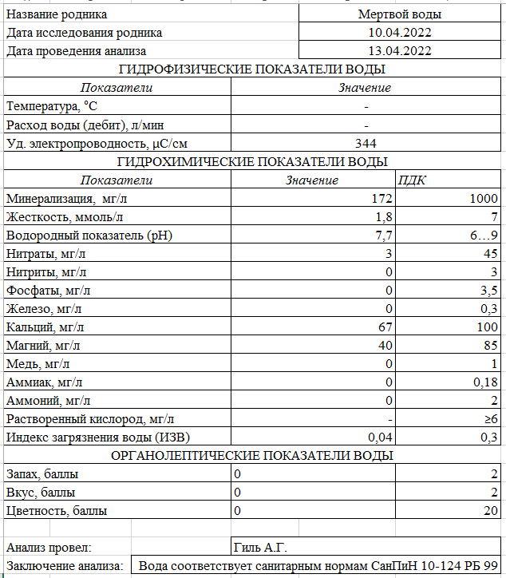
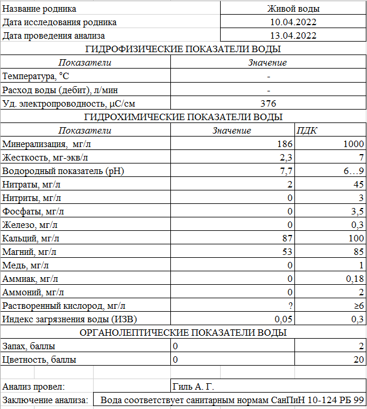

Родники живой и мертвой воды
10.04.2022
Гродненская область > Новогрудский район > д. Косичи > Родники живой и мертвой воды
Родники живой и мертвой воды находятся в прилеске у дороги Н6500 Косичи-Старые Гончары. Возле родника находится отдельное здание, относящееся к д. Старые Гончары. Также многие относят родник к соседней деревне Косичи.
Родники представляют собой два отдельных реокрена. Вода из двух родников сливается в один ручей, впадающий в безымянную реку - правый приток реки Ятранки. Вокруг родников растет большое количество высоких деревьев, и многие из них срослись по 2.
Кольцо с живой водой поросло водорослями. Родник с мертвой водой имеет больший дебит, кольцо чище. Это подтверждается и по химическому анализу: мертвая вода имеет меньшую минерализацию и жесткость. У воды из обоих источников очень хорошие потребительские качества. Многие люди придерживаются следующего ритуала: сначала надо умыться мертвой, потом - живой водой. Так же поступают и с питьем воды.
Анализ воды


Местоположение
Координаты: 53.4562223, 25.8087662